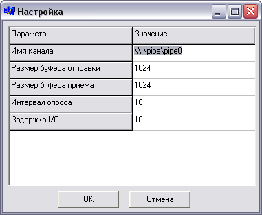
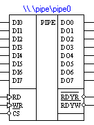
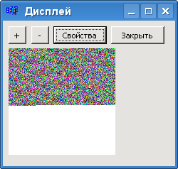
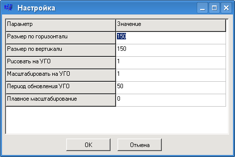
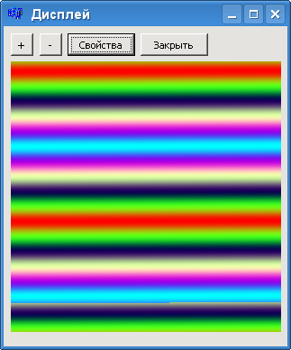
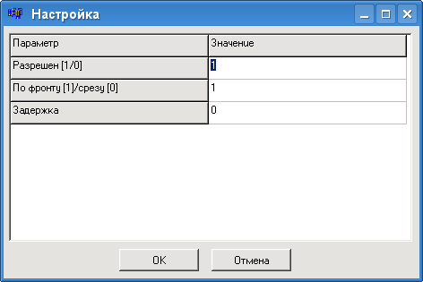
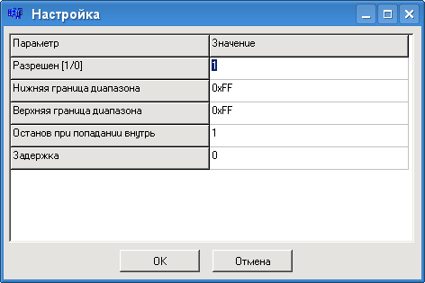
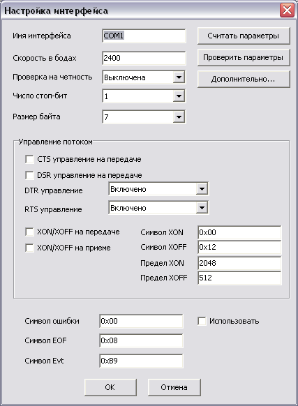
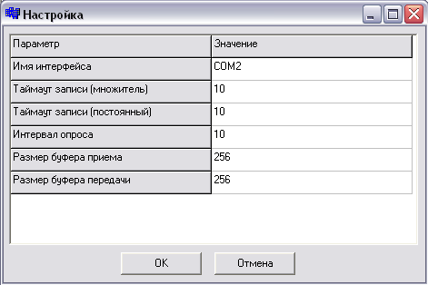

 
Назначение выводов (более подробное описание приведено после таблицы):
| Вывод | Назначение |
| DI0-DI7 | Входы данных. На эти входы должны приходить отправляемые в канал байты. DI7-старший разряд |
| DO0-DO7 | Выходы данных (трехстабильные). Сюда будут выдаваться принятые из канала байты данных |
| RD | Управляющий вход для сигнала чтения байтов. Управляется динамически, по перепаду L->H |
| WR | Управляющий вход для сигнала записи байтов. Управляется динамически, по перепаду L->H |
| CS | Управляющий вход выбора микросхемы (chip select). Активный уровень - низкий (L). Если CS неактивен, элемент не реагирует на сигналы RD и WR, а линии DO0-DO7 находятся в Z-состоянии |
| RDYR | Выход, показывающий готовность чтения. Активный уровень - низкий |
| RDYW | Выход, показывающий готовность записи. Активный уровень - низкий |
Специальный "элемент" для работы с именованными программными каналами (pipe) Windows NT. Может использоваться для связи между несколькими запущенными экземплярами Analiser'а. Работает в полнодуплексном режиме, может одновременно передавать и принимать данные (по одному байту за раз) и имитировать работу полнодуплексного параллельного канала данных (буферизованного или нет). Может передавать данные между разными машинами в сети.
Чтение производится при наличии активного (низкого) уровня на выходе RDYR (т.е. когда данные пришли) и перепаде L->H на RD. В этом случае байт извлекается из программного канала и держится на выходах DOUT (на условном обозначении DO) до следующего чтения. Если при перепаде L->H на RD данные не готовы, на линиях DOUT будут уровни логического нуля.
Запись производится при наличии активного (низкого) уровня на выходе RDYW (т.е. когда возможна передача данных) и перепаде L->H на WR. В этом случае байт с входов DIN (на условном обозначении DI) помещается во входной системный FIFO-буфер программного канала, где и будет храниться до извлечения. Если при записи на RDYW неактивный уровень (т.е. буфер полон), ничего никуда записано не будет.
Следует обратить внимание на то, что одним программным каналом могут одновременно пользоваться только два элемента, не больше и не меньше. Кроме того, на Windows 9x именованные программные каналы вообще не поддерживаются (во всяком случае, их создание: см Win32 Programmer's Reference).
При наличии высокого уровня на входе CS выходы DO находятся в состоянии Z.
При создании канала имя его должно иметь вид:
| \\имя-хоста\pipe\имя-канала |
Для текущей (не удаленной машины) имя-хоста состоит из одной точки. Т.е. для соединения через сеть на одной машине нужно создать канал с именем \\.\pipe\имя-канала, а на другой \\имя-первой-машины\pipe\имя-канала.
В этом случае нужно учитывать также то, что у текущего подключающегося пользователя должны быть права на использование удаленного программного канала. Если имя учетной записи и пароль на локальной и удаленной машине совпадают, никаких дополнительных действий производить не надо, т.к. сработает сквозная аутентификация Windows и канал будет доступен. Однако эта учетная запись должна быть записью пользователя, создавшего канал.
Если подключить канал не удается (в подписи к УГО программа отображает "Ошибка"), возможно, нужно явно провести аутентификацию. Для этого следует ввести следующую команду, используя командный интерпретатор Windows (cmd.exe):
| net use \\имя-хоста\IPC$ /user:имя-пользователя-создавшего-канал |
Windows спросит пароль на учетную запись. После выполнения команды канал должен стать доступным. После завершения работы подключенный ресурс IPC$ можно отключить командой
| net use \\имя-хоста\IPC$ /d |
Параметр «Интервал опроса» показывает, с какой частотой запрашивать систему о наличии пришедших данных. Чем меньше, тем более гладко будет выполняться передача, но тем больше загрузка процессора. Ноль указывать нельзя.
Параметр "Задержка I/O" показывает задержку между подачей управляющего сигнала (чтения или записи) и появлением результата на выходах элемента.
Аналог предыдущего канала, но только с одной линией для данных. В остальном поведение то же.
Этот элемент тоже использует программные каналы для передачи данных между процессами или даже по сети. DI – входы, DO – выходы. Никаких управляющих сигналов тут нет. Любое изменение уровней на входах будет отправлено по каналу; оно проявится с другой стороны канала.
Этот элемент также может передавать данные в обе стороны одновременно.
Свойства у него те же, что и у предыдущих элементов;
Если удаленный конец канала не принимает данные, буфер передачи когда-нибудь заполнится, и последние изменения уровней отсылаться не будут.
Это аналог предыдущего, только с одной линией. По сути, два провода, «протянутых» между процессами (два последовательных канала, передающих данные в разные стороны).
Генератор псевдослучайных байтовых чисел. Реализован как обычный конгруэнтный генератор.
При перепаде L->H на входе RES инициализируется случайным значением. При перепаде L->H на входе C генерируется новое число, которое выводится на выходы D7-D0. Вход CS служит для отключения выходов. Когда на нем высокий уровень, выходы переводятся в Z-состояние.
Этот элемент аналогичен предыдущему. Однако выходная линия только одна: этот генератор предназначен для генерации импульсов с заданной вероятностью (вероятность настраивается).
При перепаде L->H на входе C на выход выводится высокий уровень с заданной вероятностью.
Внешнее устройство со встроенным буфером FIFO.
Выход RDY показывает, когда в буфере есть место (активный уровень говорит о готовности принять еще байт).
При перепаде L-->H на входе WR байт добавляется в конец очереди, если в ней есть место. Начало очереди выводится на самом УГО принтера при работе.
Настраиваемые параметры:
Внешнее устройство со встроенным буфером FIFO. Принимает данные в последовательном виде с использованием протокола асинхронного режима передачи данных КР580ВВ51
Контакты компонента:
| Обозначение | Вход/выход | Функциональное назначение |
| RxD | вход | Линия приема данных в последовательном виде |
| RxC | вход | Синхронизация приема данных |
| RDY | выход | Готовность принтера (активный низкий уровень показывает о наличие в буфере принтера свободного места) |
Формат кадра:
Настраиваемые параметры:
Служит для ввода ASCII-кодов символов с клавиатуры ПК. Когда этот элемент выделен, коды нажатых клавиш добавляются во встроенный буфер FIFO элемента (размер настраивается).
Перепад L->H на входе RES приводит к очистке буфера.
Аналогичный перепад на RD приводит к выдаче кода прочитанной клавиши на выходы D7-D0 и удалению его из очереди.
Выход RDY показывает, есть ли символы в буфере. Если да, на этом выходе будет низкий уровень;
Выход FULL показывает, заполнен ли буфер полностью. Если да, на этом выходе будет низкий уровень.
Это 64-клавишная клавиатура со встроенным дешифратором строк.
Входы R0-R2 определяют номер сканируемой в данный момент строки. При этом на выходах будут присутствовать уровни H на тех, которые соответствуют нажатым клавишам. На остальных будут низкие уровни.
Выход ST при этом устанавливается в уровень единицы в том случае, когда в текущей строке есть хотя бы одна нажатая клавиша.
Клавиши можно нажимать мышью как во время разработки схемы, так и во время симуляции.
Это 64-клавишная клавиатура без встроенного дешифратора строк.
Входы определяют номер сканируемой в данный момент строки. Не более чем на одном входе должен присутствовать уровень H, такой вход показывает сканируемую строку. При этом на выходах будут присутствовать уровни H на тех, которые соответствуют нажатым клавишам. На остальных будут низкие уровни.
Выход ST при этом устанавливается в уровень единицы в том случае, когда в текущей строке есть хотя бы одна нажатая клавиша.
Этот элемент служит всего лишь для добавления текстовой пометки на схему. Помимо выдаваемого текста, можно настроить шрифт.
Этот элемент проигрывает заданный WAV-файл, когда на его вход приходит фронт импульса. Имя файла задается в странице свойств элемента, вызываемой, как обычно, нажатием правой кнопки мыши на УГО элемента (для быстрого выбора файла можно вызвать диалог выбора, дважды щелкнув мышью на полосе ввода имени файла).
Обычный однонаправленный шинный формирователь. Когда на входе CS уровень нуля, на выходы DO0-DO7 подаются данные, приходящие на входы DI0-DI7. Если на CS высокий уровень, выходы DO0-DO7 находятся в Z-состоянии.
Этот шинный формирователь может передавать данные в обоих направлениях. Это определяется состоянием входа T. Когда на T высокий уровень, данные передаются от DO0-DO7 к DI0-DI7. Иначе наоборот. Вход CS показывает состояние выходов. Если CS неактивен (H), выходы находятся в Z-состоянии.
Позволяет читать последовательно байты из заданного файла. При активном (низком) уровне на входе CS на выходах Di отображается последний считанный из файла байт (если еще ничего считано не было, отображается ноль). Перепад L->H на входе RD приводит к чтению байта из файла. При этом, если CS активен, считанный байт выдается на выходы Di.
При достижении конца файла на выходе EOF появляется высокий уровень. Также высокий уровень на EOF наблюдается при отсутствии заданного файла или при невозможности его открытия.
В любой момент можно начать чтение файла заново, подав перепад L->H на вход REWIND. При этом на EOF будет низкий уровень, если, конечно, файл не пуст.
Растровый дисплей, позволяющий отображать цветные и черно-белые изображения. Изображение рисуется построчно, причем в каждой строке последовательно выводятся пиксели, начиная от левого. Изображение отображается в отдельном окне, но может также выводиться в самом УГО элемента.
Перепад L->H на входе SYN приводит к рисованию очередного пикселя. При этом, если вход BW подключен к шине, то при высоком уровне на нем рисуется белый пиксель, а при низком - черный. Если подключен вход RGB, данные с него используются для рисования цветных пикселей. Происходит это следующим образом. Цвет представляется 24-битным целым числом, три байта которого содержат цветовые компоненты RGB. Красную компоненту характеризует младший байт, синюю - старший. На вход RGB данные о цвете приходят последовательно, начиная с младшего разряда. Т.е. для рисования одного пикселя требуется 24 тактов SYN, из которых первые 8 происходит считывание красной компоненты, следующие 8 - зеленой и т.д. Поэтому рисование цветных изображения происходит весьма медленно, лучше использовать для него другие варианты дисплея.
Перепад L->H на входе RST приводит к смещению текущей позиции рисования в левый верхний угол дисплея.
Перепад L->H на входе NL приводит к окончанию рисования текущей строки и началу рисования следующей.
Изображение выводится в отдельное окно, которое можно вывести на экран, нажав правую кнопку мыши на УГО дисплея. Это окно может выглядеть, например, так:
Есть возможность изменения масштаба изображения в окне. Следует отметить, что рисование изображения при измененном масштабе происходит намного медленнее. Также из этого окна можно вызвать страницу свойств дисплея. Она выглядит так:
Настраиваемые параметры:
Этот дисплей позволяет быстро рисовать 16-цветные изображения. Данные о цвете передаются по входам I (интенсивность), R (красная компонента), G (зеленая компонента), B (синяя компонента) параллельно. При каждом перепаде L->H на SYN данные с этих входов считываются и используются для рисования текущего пикселя. Назначение остальных входов, окон и страницы свойств такое же, что и у первого варианта дисплея.
Аналогичен предыдущему, но входы RGB принимают аналоговый сигнал в диапазоне от 0 до 3 В. Позволяет быстро отображать полноцветные изображения. Назначение остальных входов, окон и страницы свойств такое же, что и у первого варианта дисплея.
Например, можно без особого труда нарисовать такое изображение:
Этот элемент используется для приостановки симуляции при приходе заданного сигнала. Симуляция приостанавливается при перепаде L->H или H->L на входе элемента в зависимости от настройки. Страница свойств выглядит так:
Можно выбрать, по какому изменению сигнала производить останов, а также разрешить или запретить его вообще. Параметр "Задержка" показывает, через сколько условных наносекунд произвести останов после перепада уровня на входе.
Используется для приостановки симуляции, когда на входе элемента окажется байт из заданного диапазона. Здесь можно настроить следующие параметры:
Можно разрешить или запретить точку останова, указать диапазон, в который должен попасть входной байт. Также можно выбрать, должен ли останов производиться при попадании байта внутрь диапазона или вне его. Параметр "Задержка" показывает, через сколько условных наносекунд произвести останов после перепада уровня на входе.
Данный элемент используется для доступа к реальным коммуникационным портам, доступным на компьютере, на котором работает симулятор. В моделируемых схемах его можно использовать аналогично программному каналу.
Элемент рассчитан на использование последовательных (COM) портов. Потенциально можно использовать и параллельный (LPT) порт, однако такая работа не проверялась, кроме того, настраиваемые параметры приспособлены именно под последовательный интерфейс.
Данные в элемент или из него передаются посредством двунаправленных трехстабильных выводов D0 - D7. Вход CS служит для выбора элемента и разрешает обмен по шине данных Di. Входы RD и WR используются для подачи управляющих сигналов чтения и записи соответственно. Активным уровнем для CS, RD, WR является низкий логический уровень.
Сигналы RDYR и RDYW (активный уровень H) показывают готовность данных для чтения или возможность записи в данный момент. Активный уровень (H) на выходе ERR говорит о том, что произошла ошибка (например, не удалось открыть интерфейс для работы с ним).
Запись байта в элемент с помощью сигнала WR=L приводит к занесению его во внутренний буфер, причем любое изменение сигнала на входах Di отразится на содержимом буфера. После снятия активного уровня с WR байт будет отправлен на выбранный коммуникационный интерфейс (например, COM1), если это возможно. При этом до отправки RDYW устанавливается в неактивное (L) состояние, а после отправки возвращается в активное. Если во время отправки в элемент будет записан еще один байт, он будет потерян.
Чтение байтов есть смысл производить, когда RDYR активен. Таковым он станет, если какие-то данные получены по интерфейсу. Если получаемые байты не считывать, они накапливаются во внутреннем буфере и, таким образом, не теряются. При чтении байта он извлекается из буфера и выдается на выходы Di. Если чтение происходит в тот момент, когда буфер пуст, считывается нулевой байт.
Перепад L->H на входе RES приводит к сбросу. При этом происходит очистка буферов и сброс ошибочного состояния, если ранее происходила ошибка.
Активный (H) уровень на входе BRK приводит к приостановке (BREAK) передачи. Передача будет возобновлена при снятии активного уровня с BRK.
Настраиваемых параметров довольно много. Окно настройки показано на рисунке:
Параметры:
Управление потоком. Может использоваться программное управление XON/XOFF или аппаратное с помощью линий CTS, DSR, DTR или RTS
Программное управление потоком XON/XOFF предполагает использование специальных символов, играющих роль команд приостановки/возобновления передачи. Если приемник не может больше принимать данных, он отправляет символ XOFF, передатчик должен его принять и прекратить передачу. Символ XON, наоборот, возобновляет передачу. Понятно, что обе стороны должны быть настроены одинаково: т.е. использовать один тип управления потоком и одинаковые символы XON и XOFF.
Аппаратное управление потоком использует отдельные контакты интерфейса (CTS, RTS, DSR, DTR) для приостановки/возобновления передачи. Это не требует использования специальных символов. Можно использовать сигналы CTS или DSR для управления исходяющим потоком: если они неактивны, передача приостанавливается до тех пор, пока они снова не придут в активное состояние. Эту возможность можно включить, но по умолчанию она выключена. Также используются линии DTR и RTS.
Также может потребоваться задать пределы числа принятых байтов во входном буфере: высший (предел XON, при котором отправляется команда приостановить передачу) и низший (предел XOFF, при котором отправляется команда разрешения). Оба этих числа не должны быть равны нулю.
Кнопка "Считать параметры" определяет текущие параметры выбранного интерфейса, если это возможно, и заполняет поля формы соответствующим образом
Кнопка "Проверить параметры" пытается установить выбранные в форме параметры как текущие для выбранного интерфейса. После этого считывает параметры и заполняет форму уже корректными данными
Нажатие кнопки "Дополнительно" приводит к отображению еще одного окна настройки:
Здесь задаются, во-первых, таймауты записи. Общий таймаут зависит от число записываемых за операцию байтов и равен постоянному таймауту плюс множителю, умноженному на число байт. Эти величины задаются в миллисекундах ("реальных"), можно попробовать поменять их с целью улучшения производительности, хотя значения по умолчанию подходят неплохо.
Интервал опроса задает время между последовательными опросами состояния интерфейса. Задается в условном времени симуляции (в наносекундах)
Размеры буфера, задаваемые здесь, являют собой лишь "подсказки" для драйвера. Реально выбранный размер буфера в полной мере зависит от драйвера и не может быть установлен вручную.
Следует отметить, что несколько процессов не могут использовать один порт одновременно. Также для использования данного плагина могут потребоваться определенные права.